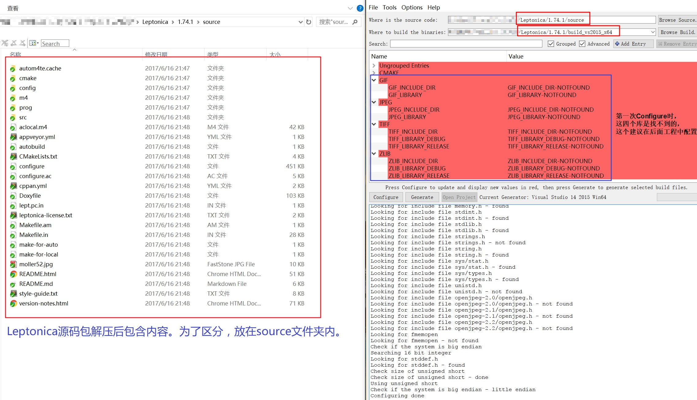

OpenCV对于做计算机视觉这一行的人肯定非常熟悉，相较于它，另外一个开源库Leptonica就相对小众很多。Leptonica主要是面向教学用途的开源库。最有名的OCR开源库Tesseract就是利用Leptonica作为基础库使用的，尽管如此，Leptonica中使用的一些算法仍值学习，本文就简单介绍下VS编译方法及过程。
工具
- Leptonica
- OpenCV
- CMake
- Visual Studio (本文以2015版为例)
- 由于Leptonica对于图像读写操作也是依赖第三方库，而且和OpenCV一样，所以采用OpenCV内提供的3rdparty\src来编译。如果不想使用OpenCV内的，其自行下载如下五个库编译：
zlib
libpng
libjpeg
libtiff
libgif
编译OpenCV
这里不详细说明，但强调下，OpenCV一定需要重新编译，因为要使用到重新编译后生成的lib文件及两个头文件。具体过程请参考博客《OpenCV源码环境配置(2.X版及3.X版 + VS2008/VS2013 + win7 x86)》。
编译Leptonica
CMake生成工程
解压Leptonica源码包，利用CMake将Leptonica源码包生成所需版本。

配置工程
打开CMake后的工程，按如下步骤配置leptonica工程。
Additional Include Directions:
1
2
3
4
5
6
7
|
..\opencv\sources\3rdparty\zlib;
..\opencv\sources\3rdparty\libtiff;
..\opencv\sources\3rdparty\libpng;
..\opencv\sources\3rdparty\libjpeg;
..\leptonica\source\src;
..\$cmake时指定的leptonica工程目录$\src;
..\include\3rdparty;(这个目录为自建目录，将OpenCV编译后，工程文件夹内3rdparty\zlib和3rdparty\libtiff目录下zconf.h和tif_config.h两个文件拷贝至此)
|
Additional Library Directions:
1
|
..\install\x64\vc14\staticlib;(OpenCV重新编译后，生成的lib文件所在目录)
|
Additional Dependencies:
1
2
3
4
5
|
Release or Debug
libjpeg.lib or libjpegd.lib
libpng.lib or libpngd.lib
libtiff.lib or libtiffd.lib
zlib.lib or zlibd.lib
|
Preprocessor Definitions中添加:
找到config_auto.h，修改里面宏定义，添加：
1
2
3
4
|
#define HAVE_LIBPNG 1
#define HAVE_LIBJPEG 1
#define HAVE_LIBTIFF 1
#define HAVEL_LIBZ 1
|
此时编译工程会出现’INT32’ redefinition的错误。到jmorecfg.h中
1
2
3
|
#ifndef XMD_H /* X11/xmd.h correctly defines INT32 */
typedef long INT32;
#endif
|
改为
1
2
3
4
5
6
7
8
9
10
|
#include <Windows.h> /* Added by wujiyang 2017.6.13 14:18 complier dlib for leptonica */
#ifndef XMD_H /* X11/xmd.h correctly defines INT32 */
#ifndef _BASETSD_H_ /* Microsoft defines it in basetsd.h */
#ifndef _BASETSD_H /* MinGW is slightly different */
#ifndef QGLOBAL_H /* Qt defines it in qglobal.h */
typedef long INT32;
#endif
#endif
#endif
#endif
|
至此就完成leptonica工程配置，可以重编工程了。
使用重编后的库
只需将刚编译好的leptonica-版本号d.dll或leptonica-版本号.dll(工程目录bin文件夹中)拷贝至所需工程下即可。